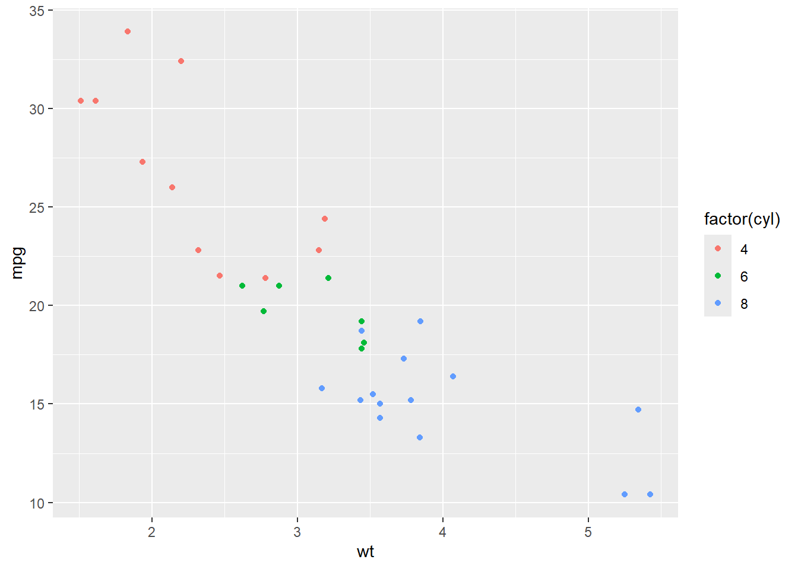

Much of this class will center on manipulating and visualizing data. This section gets into how to do that in R. Further details about these topics can be found in the amazing and totally free R for Data Science (R4DS). Chapters 1 and 3 will be especially useful, but all of the content in chapters 1-20 (sounds like a lot, but each chapter is fairly short) may be worth checking out.
To the code in this walkthrough, you will need to load the tidyverse libraries (technically we will primarily use ggplot, dplyr, and tidyr, with a tiny bit of tibble):
# tidyverse packageslibrary(tidyverse)
── Attaching core tidyverse packages ──────────────────────── tidyverse 2.0.0 ──
✔ dplyr 1.1.4 ✔ readr 2.1.5
✔ forcats 1.0.0 ✔ stringr 1.5.1
✔ ggplot2 3.5.1 ✔ tibble 3.2.1
✔ lubridate 1.9.4 ✔ tidyr 1.3.1
✔ purrr 1.0.2
── Conflicts ────────────────────────────────────────── tidyverse_conflicts() ──
✖ dplyr::filter() masks stats::filter()
✖ dplyr::lag() masks stats::lag()
ℹ Use the conflicted package (<http://conflicted.r-lib.org/>) to force all conflicts to become errors
Throughout, I will use the mtcars dataset, which is a built-in R data frame (meaning it’s always available to you within any R installation; run print(mtcars) on your console to see what I mean) that contains automobile data extracted from the 1974 Motor Trend magazine. The dataset has 32 rows (each representing a different car model, with the name of that model being the row names of the data frame), and 11 columns (variables). These variables include:
mpg (miles per gallon): numeric data on the fuel efficiency
cyl (Number of cylinders): typically 4, 6, or 8
hp (horsepower): numeric data on the engine power
wt (Weight in 1000s of lbs): numeric data on the car’s weight
disp (Displacement in cubic inches): engine size
Why this data? Because it’s an R education classic.
An introduction to ggplot
The ggplot2 package is part of the tidyverse collection. It implements the Grammar of Graphics, which allows you to build plots layer by layer. The general structure is:
where things in <...> are general placeholders that you would have to edit to get working code. The general features are:
ggplot(data = ...): specifies the dataset.
aes(): specifies which columns map to the x-axis, y-axis, color, size, etc. of the plot
<GEOM_FUNCTION>, which in practice often looks like geom_*(): specifies the geometry or type of plot (points, bars, lines, tiles, etc.)
Making scatter plots with geom_point()
Scatter plots are used to visualize the relationship between two numeric variables.
As an example, consider plotting mpg (miles per gallon) against wt (weight of the car) from the mtcars dataset to see if mileage is correlated with weight:
ggplot(data = mtcars, aes(x = wt, y = mpg)) +geom_point()
We are mapping wt on the x-axis and mpg on the y-axis
geom_point() draws the scatter plot by making each data points x and y a point (circular by default).
You can add more aesthetics, for example coloring the points by the number of cylinders:
ggplot(data = mtcars,aes(x = wt, y = mpg, color =factor(cyl))) +geom_point()

Note that cyl is numeric in mtcars, so we can convert it to a factor (factor(cyl)) when using it as a categorical variable (a variable with a finite set of values).
Jittered scatter plots with geom_jitter()
A jitter plot helps when data points overlap (i.e., have identical x or y values). It adds a small random noise to the position of each point, preventing them from lying exactly on top of each other:
Here, x is factor(cyl), turning cylinders into discrete categories.
We add jitter on the x-axis (using width = 0.2), and none on the y-axis (height = 0). This makes sense as the x-axis is not numeric, so points being more to the left or right than they “should” doesn’t effect interpretation. The y-axis is a continuous numeric variable though, so adding jitter in that direction distorts the data and could mislead someone looking at the plot.
alpha = 0.7 makes the points slightly transparent to give you a sense of point density.
Histograms with geom_histogram()
A histogram is used to visualize the distribution of a single numeric variable. Let’s look at the distribution of miles per gallon (mpg):
`stat_bin()` using `bins = 30`. Pick better value with `binwidth`.
Warning in scale_y_log10(): log-10 transformation introduced infinite values.
Warning: Removed 12 rows containing missing values or values outside the scale range
(`geom_bar()`).
Heatmaps with geom_tile()
A heatmap is useful for visualizing a matrix of values or the relationship between two categorical variables, colored by a numeric value. One common example is a correlation matrix among numeric variables.
A somewhat silly example of this is below; all you need to know is that data ends up being a data frame with columns X, Y, and Z, where X and Y are categorical variables (i.e., they take on a finite set of values) and Z is a continuous numeric variable created using a particular random number generator (runif()):
geom_tile() draws the heatmap squares, one for each X and Y combo. fill = Z colors the tiles by the Z-value.
For a more hardcore example, let’s create a correlation matrix among select columns in mtcars (e.g., mpg, wt, hp, disp) and plot it as a heatmap:
# Compute correlationscor_mat <-cor(mtcars[, c("mpg", "wt", "hp", "disp")])# Convert to a long format dataframe for plottingcor_df <-as.data.frame(as.table(cor_mat))colnames(cor_df) <-c("Var1", "Var2", "Correlation")# Plot with geom_tile()ggplot(data = cor_df, aes(x = Var1, y = Var2, fill = Correlation)) +geom_tile() +scale_fill_gradient2(low ="blue", mid ="white", high ="red", midpoint =0) +theme_minimal() +coord_fixed() +labs(title ="Correlation Heatmap")
cor() calculates the correlation matrix, this has rows and columns “mpg”, “wt”, “hp”, and “disp”, with entries being the correlation between of these variables and all of the other varialbes.
as.table() and then as.data.frame() converts the matrix into a long format with columns for what was the rowname of the correlation matrix (renamed to “Var1”) and what was the colname of the correlation matrix (renamed to “Var2”), as well as the correlation value between “Var1” and “Var2”.
scale_fill_gradient2() helps us visualize positive vs. negative correlations using a diverging color scale.
coord_fixed() ensures each tile is square
ggplot themes
So far, we have discussed the basics of how to plot data with ggplot. One thing that might stand out about this plot is various aspects of its aesthetics:
The gray checkerboard background
The font sizes
Text on axes and color legends
etc.
To change these aspects, we can use the concept of “themes” in ggplot2. This is done through the theme() function.
Starting with the simple scatter plot we made earlier, we can update its look with a number of built-in themes that ggplot provides. For example, I am a fan of the “classic” theme:
Check out the documentation (e.g., by running ?ggplot2::theme or going to this link) to learn more. There is also a nice article on the topic of customizing themes here.
An introduction to dplyr and tidyr
dplyr and tidyr are both part of the tidyverse collection of packages:
dplyr focuses on data manipulation and transformation. It provides a set of “verbs” that correspond to common data manipulation tasks (e.g., filter, select, mutate, summarise, arrange). These functions are often used together in a pipeline (with the %>% operator) to create clean, readable code that closely expresses the steps of your data processing.
tidyr specializes in reshaping data between wide and long (the latter called “tidy”) formats. In a tidy dataset, each variable is its own column, each observation is its own row, and each value is in its own cell. By using functions like pivot_longer() and pivot_wider(), tidyr helps you reorganize your data so that it’s consistent with these tidy data principles, facilitating analysis and visualization later on.
Combining commands with %>%
Throughout this tutorial, I will use the so-called “magrittr pipe” (%>%). This allows you to pass the result of one function as the first argument of the next function. It can make your code a lot cleaner and easier to read. A simple example of the pipe is:
myvect <-c(1, 2, 3)# Sum the elements of the vectorsum(myvect)
[1] 6
# Same thing, but with a pipemyvect %>%sum()
[1] 6
These are two ways of doing the same thing. Either you can provide myvect to the function sum() as normal, or you can pipe it in; these are equivalent. The real power of %>% comes from how it allows you to stitch together multiple operations:
mtcars %>%subset(mpg >20) %>%ggplot(aes(x = wt, y = mpg)) +geom_point()
First, we pipe our data into subset(), which is a base R function that takes a data frame as input and returns only the rows that match a certain condition (mpg > 20 in this case).
We are then piping the output of subset() into ggplot(), which is the equivalent of writing ggplot(data = subset(mtcars, mpg > 20), aes(x = wt, y = mpg)) + ...
Technically, newer versions of R (version 4.1 and later) have a base R version of the pipe, known as the native pipe (|>). They work pretty similarly, but I am an old hat and thus like to stick with the trusty magrittr pipe. You should feel free to use either though.
Selecting columns with dplyr::select()
select() can be used to choose (or exclude) specific columns in a data frame. The simplest usage of select() is to specify the columns you want to keep by name:
If you want to get fancy, sometimes you don’t know the column names beforehand – maybe they come from user input to a function. In those cases, you can store column names in a charater variable and use !! (the “bang-bang” operator) to unquote them (convert them from strings to as if you were typing them in yourself without the " "):
Adding columns to a data frame with dplyr::mutate()
mutate() allows you to add new columns (variables) or modify existing columns.
For instance, suppose you want to create a new column named mpg_level, categorizing mpg into “high” or “low” mileage based on whether a car gets more than 20 mpg:
We take the mtcars data frame and pipe (%>%) it to mutate(). This means we are passing mtcars as the first argument of mutate, which needs to be a data frame.
ifelse() assigns a value of “high” to rows for which mpg > 20, and “low” otherwise.
The resulting new column is called mpg_level, and it is only present in the new data frame mtcars_new
Grouping and summarizing with dplyr::summarise() and dplyr::group_by()
When working with data grouped by categories, you can compute summary statistics per group.
Example: find the average miles per gallon (mpg) for each number of cylinders, and also track how many car models there are in each group:
mtcars %>%group_by(cyl) %>%summarise(mean_mpg =mean(mpg), n =n())
group_by(cyl) splits the data by the cyl variable. Whatever happens next will be done on each group separately.
summarise() calculates summary statistics. Here, we calculate the average value (mean()) of the mpg column, and the number of data points (count of rows, n()).
Filtering data frames with dplyr::filter()
Use filter() to only keep rows that pass a certain set of conditions. For example, to select cars with more than 20 mpg:
You can also combine filtering with grouping and only keep entire groups that pass a certain filter (e.g., by using any() and all()). For example, to keep only the groups of cars with the same cylinder that have at least one member of the group with more than 150 horsepower:
If any car in that group has hp > 150, all rows of that group are kept.
By contrast, if you wanted to keep only the groups where all cars exceeded 150 horsepower:
mtcars %>%group_by(cyl) %>%filter(all(hp >150))
# A tibble: 0 × 11
# Groups: cyl [0]
# ℹ 11 variables: mpg <dbl>, cyl <dbl>, disp <dbl>, hp <dbl>, drat <dbl>,
# wt <dbl>, qsec <dbl>, vs <dbl>, am <dbl>, gear <dbl>, carb <dbl>
all(hp > 150) means every car in the group must have hp greater than 150.
Combining tables with joins
When you have two data frames that share at least one common column, you can join them together. For example, you might have:
sample: The name of a sample that data came from
gene_id: An identifier for a gene
There are 4 major types of joins that you can consider doing in this situation (df1 and df2 refer to the data frames being joined):
inner_join(df1, df2): Combines the tables so that only rows with matching values in the join columns of both tables are kept. In the example below (moving away from mtcars for just the join examples), we are joining by the shared column “sample”, and “sampleC” is unique to one data frame while “sampleD” and “sampleZ” are unique to the other. Thus, the rows for these three cases are dropped:
# A tibble: 2 × 3
sample reads treatment
<chr> <dbl> <chr>
1 sampleA 10 drug
2 sampleB 100 nodrug
left_join(df1, df2): Keeps all rows from the “left table” (df1, as it is the argument on the left). If any of the entries in join columns in the left table are not found in the right table, NA will be placed in the df2 column values in the new table. If an entry is found in df2 but not df1, it will not be in the output. For example, below, “sampleC” is present in the left data frame but not the right, so the column unique to the right data frame (treatment) is given a value of NA for that row:
right_join(df1, df2): Same as left join but now the “right table” (df2 in this case) keeps all of its rows and the “left table” columns will be replaced with NA when a right table entry is not present in the left table:
# A tibble: 5 × 3
sample reads treatment
<chr> <dbl> <chr>
1 sampleA 10 drug
2 sampleB 100 nodrug
3 sampleC 1000 <NA>
4 sampleD NA drug
5 sampleZ NA nodrug
There is a really nice visualization for all of the join strategies in R4DS here. Other kinds of joins are discussed in R4DS, but aren’t necessary for the exercises in this unit.
Pivoting data longer and wider with tidyr
The tidyr package provides convenient functions to reshape data:
pivot_longer(): Makes wide data longer, gathering columns into key-value pairs. This can make untidy data tidy.
pivot_wider(): Spreads long (tidy) data into wider format, creating new columns. Sometimes, untidy data is better for certain visualizations and analyses.
Let’s create a simplified data frame with a few columns:
row_names_to_column converts the row names of the data frame into a column. This is generally good practice. It is part of the tibble package, included in the tidyverse.
head() prints the first 6 rows of a data frame to give you an easy to parse look at its contents
Suppose we want to pivot this data so that mpg, hp, and wt become rows under a single “measurement” column, with their values in another column:
cols denotes the set of columns you want to “pivot”
names_to is the name of the new columns that will store the names of the columns in cols. We are “pivoting longer”, so these three columns in cols will no longer exist, with their content spread throughout the data frame. This new column (“measurement”) will track which rows correspond to information originally contained in these columns
values_to is the name of the new column that will store the values of the original columns.
We can go back to the wide format by “pivoting wider”:
car_data_wide <- car_data_long %>%pivot_wider(names_from = measurement,values_from = value )head(car_data_wide)